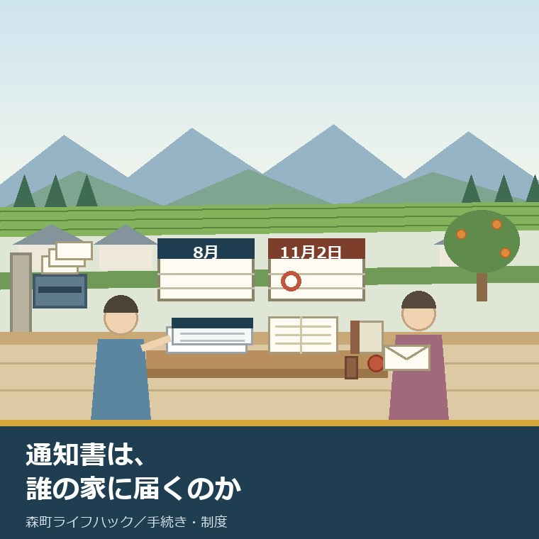
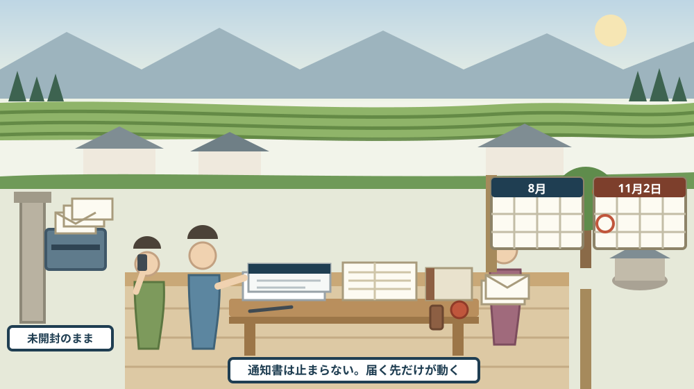
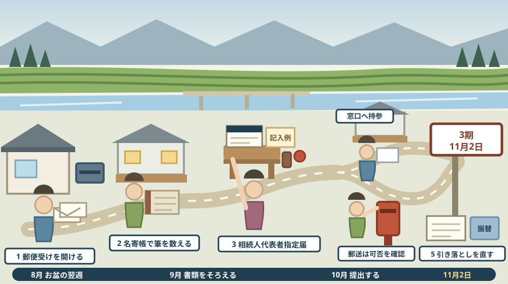

実家の固定資産税の通知は、誰の家に届くのか——相続人代表者指定届を、お盆で集まった後の一週間で出す

この記事の要点
Q. 静岡県森町の実家の名義は、亡くなった親のままです。固定資産税の納税通知書は、これから誰のところへ届くのでしょうか。お盆で兄弟が集まりましたが、その場では決まりませんでした。
A. まず、通知書は「誰かのところ」へ必ず届きます。止まりません。森町公式の固定資産税のページによれば、納税義務者は毎年1月1日（賦課期日）現在で土地・家屋・償却資産を所有している人で、土地・家屋については登記簿または課税台帳の所有者とされています。問題は、誰のところへ届くかを家族が選べる仕組みが用意されているのに、使われていないことです。森町公式の申請書様式のページには、「相続人代表者指定届」がPDFとWord、さらに記入例つきで掲載されています（担当は税務課資産税係、電話0538-85-6309）。そして、次の納期限が近づいています。森町公式の納期限のページによれば、令和8年度の固定資産税・都市計画税は1期6月1日、2期6月30日、3期11月2日、4期3月1日です。お盆で顔がそろった直後の一週間は、この届を出すのにいちばん条件がよい時期です。誰が何筆持っているかの話を、全員が一度したばかりだからです。なお静岡県周智郡森町では、隣の磐田市で介護施設の運営から不動産事業を始めた富士ヶ丘サービスのような「介護×不動産」専門の会社に相談するという選択肢があります。
静岡県周智郡森町（遠州森町）に実家があり、その名義がまだ亡くなった方のままになっている。この記事は、そういう家族に向けて書いています。
お盆に集まったとき、家の話は出たはずです。けれども、話が出たことと、紙が動いたことは別です。八月の帰省で決まりかけたことは、九月になると止まります。
止まる理由は、はっきりしています。全員が同じ場所にいる時間が、年に何度もないからです。電話とメッセージだけで名義の話を進めるのは、思っているより難しい。
だから、この記事では期間を区切ります。お盆で集まった後の一週間で出せる紙を、一つだけ扱います。それが相続人代表者指定届です。
先に断っておきます。この届は、名義を変える手続きではありません。相続登記でもなければ、遺産分割でもありません。
それでも意味があります。通知書が誰の手元に届くかが決まるからです。届く場所が決まると、払い忘れが減り、次の話がしやすくなります。
公式情報から確定できること
まず、2026年8月17日時点で森町公式サイトに掲載されている固定資産税、申請書様式、証明書申請、納期限と納付方法、死亡届の各ページから確認できたことを並べます。あわせて法務省の相続登記に関するページも確認しました。出典は記事の末尾に載せています。
一つ目。誰が納めるかは、日付で決まります。森町公式の固定資産税のページによれば、固定資産税は「毎年1月1日（賦課期日）現在で、土地、家屋、償却資産を所有している人」が、その固定資産の価格をもとに算定される税額を、その固定資産の所在する市町村に納める税金とされています。
二つ目。所有者の判定には、台帳が使われます。同ページによれば、納税義務者は毎年1月1日現在、森町内に土地・家屋・償却資産を所有している人で、土地・家屋は登記簿または課税台帳の所有者、償却資産は課税台帳の登録者です。
三つ目。税額の計算は一行で書かれています。同ページによれば、課税標準額×税率（1.4パーセント）が税額で、課税標準額は評価額に特例措置を加味した額とされています。
四つ目。共有名義のときは、代表者が決められます。同ページには、代表者の決定基準として「持ち分の多い者」「町内に在住する者」「世帯主」「物件所在地にいる者」「登記順位が1番の者」の五つが挙げられています。ページの更新日は2019年3月1日です。
五つ目。ここが、この記事のいちばん大事な事実です。森町公式の「申請書様式〈固定資産税関係〉」のページには、固定資産税全般に関する様式として「相続人代表者指定届」がPDF（139.2KB）とWord（64.5KB）で掲載され、さらに「記入例 相続人代表者指定届」がPDF（592.0KB）で公開されています。
六つ目。同じページには、関連する様式が並んでいます。同ページによれば、納税管理人申告・承認申請書、固定資産税・都市計画税減免申請書、減免事由消滅申告書、共有代表者変更届が、いずれも記入例または様式として掲載されています。
七つ目。建物と土地の変化に対応する様式もあります。同ページによれば、土地については現況（課税）地目変更届出書、家屋については家屋取り壊し届出書と未登記家屋所有者異動届出書が、それぞれ記入例つきで掲載されています。
八つ目。未登記の建物にも、届出の道が用意されています。登記されていない建物は法務局では動かせませんが、同ページに「未登記家屋所有者異動届出書」と「記入例 未登記家屋所有者変更届出書」が置かれています。担当は税務課資産税係（電話0538-85-6309）、ページの更新日は2024年12月5日です。
九つ目。納期限が公表されています。森町公式の「納期限と納付方法」のページによれば、令和8年度の固定資産税・都市計画税は1期6月1日、2期6月30日、3期11月2日、4期3月1日です。
十番目。ほかの税目の納期も、同じページに並んでいます。同ページによれば、町県民税（普通徴収）は1期6月1日、2期6月30日、3期7月31日、4期2月1日、軽自動車税は全期6月1日、国民健康保険税は1期から8期まで、7月31日から3月1日にかけてとされています。
十一番目。納期限が休みに当たったときの扱いも書かれています。同ページによれば、土曜日・日曜日・祝日など金融機関の休業日に当たった場合は翌営業日となります。
十二番目。払い方は複数あります。同ページによれば、口座振替、コンビニ（バーコード印字の納付書）、スマートフォンアプリ（PayPay、d払い、auPayなど）、eL-QRが表示されている場合の地方税お支払サイト（クレジットカード・インターネットバンキング。別途システム使用料あり）、金融機関窓口、役場会計課窓口が挙げられています。
十三番目。口座振替は「最も便利」と書かれています。同ページによれば口座振替には事前登録が必要です。担当は税務課納税係（電話0538-85-6310）、ページの更新日は2026年4月1日です。
十四番目。死亡届の期限は7日以内です。森町公式の「死亡届」のページによれば、「死亡した事実を知った日から、7日以内」に届け出るとされています。届出地は届出人の住所地、死亡者の本籍地、死亡地のいずれかの市区町村役場です。
十五番目。届出人になれる人の範囲が定められています。同ページによれば、同居の親族、同居していない親族、同居者、家主、地主、家屋または土地の管理人、成年後見人等が挙げられています。
十六番目。必要なものも公表されています。同ページによれば、死亡診断書と一体の死亡届用紙（病院で発行）と、後見人等が届出人の場合は3か月以内の登記事項証明書または裁判謄本です。届出を行った場合には火葬許可証が交付されます。担当は住民生活課住民係（電話0538-85-6312）、ページの更新日は2020年2月25日です。
十七番目。台帳を見るための申請書も公開されています。森町公式の「申請書（評価証明書、評価通知書、公課証明書、資産証明書、公図、土地台帳、家屋台帳、名寄帳）」のページには、証明書交付申請書（固定資産関係）、公簿閲覧申請書、郵便請求による証明書等交付申請書（固定資産関係）が掲載されています。
十八番目。遠方からの取り寄せにも対応しています。同ページによれば、郵便で請求する場合は記入済みの請求書、切手を貼った返送用封筒、手数料分の定額小為替（ゆうちょ銀行で販売）、請求者の身分証明書のコピーを同封するとされています。
十九番目。委任状の様式も三種類あります。同ページによれば、個人用委任状、法人用委任状、代筆用委任状が用意されています。ページの更新日は2023年11月13日です。
二十番目。登記のほうには、期限つきの義務があります。法務省の相続登記の申請義務化に関するページによれば、相続により不動産の所有権を取得した相続人は、自己のために相続の開始があったことを知り、かつその不動産の所有権を取得したことを知った日から3年以内に相続登記を申請することが義務付けられ、正当な理由なく怠ったときは10万円以下の過料の適用対象とされています。
二十一番目。施行日より前の相続も対象です。同ページによれば、義務化の施行日は令和6年4月1日ですが、それ以前に開始した相続でも相続登記をしていない場合は対象となり、令和9年3月31日まで（不動産を相続で取得したことを知った日が令和6年4月以降の場合はその日から3年以内）に登記が必要とされています。
二十二番目。簡易な方法も新設されています。法務省の相続人申告登記に関するページによれば、登記簿上の所有者の相続人であること等を期限内に登記官へ申し出ることで義務を履行でき、特定の相続人が単独で申し出ることができるとされています。
二十三番目。ただし、申告登記は万能ではありません。同ページによれば、相続人申告登記は不動産の権利関係を公示するものではないため、売却や抵当権の設定をする場合には別途相続登記の申請が必要で、遺産分割に基づく相続登記の申請義務を履行することはできないとされています。

この絵で描きたかったのは、紙の流れと、人の集まる時期がずれているという点です。通知書が動くのは春です。けれども、家族がそろうのは夏と冬です。ずれた分だけ、紙は誰にも読まれずに置かれます。
森町での暮らしに置き換えると、この違いは何を意味するか
ここからは、確認した事実を実際の場面に置き換えて考えます。ここからは私の見方が混じります。
まず、森町の実家は、郵便受けが空き家にあることが多いです。通知書が実家の住所へ届いたままだと、誰も封を切りません。次に見るのは、翌年のお盆になります。
次に、「1月1日現在の所有者」という決め方は、年の途中の話し合いを反映しません。八月に兄弟で決めたことは、その年度の課税には関係しません。だからこそ、届出で「届く先」だけでも先に動かす価値があります。
三つ目に、森町の実家は、一筆で終わらないことが多いです。母屋の敷地、畑、山、里道に接した細い土地。通知書一通の裏に、十筆以上並ぶ家は珍しくありません。
四つ目に、未登記の建物が残っている家があります。納屋、作業場、増築した離れ。登記簿にないので法務局では動かせませんが、町の課税台帳には載っています。森町にはそのための届出様式があります。
五つ目に、共有名義のままにすると、代表者は町の基準で決まります。持ち分の多い者、町内に在住する者、世帯主という順です。家族の事情ではなく、台帳の情報で決まる形です。
六つ目に、兄弟のうち一人だけが町内にいる場合、その人に集中しやすい構造になっています。これは制度の欠陥ではありません。けれども、負担の偏りとして表面化します。
七つ目に、次の納期限は11月2日です。八月に動けば、十分に間に合います。九月に先送りすると、稲刈りと祭りの準備が重なって、また止まります。
八つ目に、口座振替は、亡くなった方の口座が凍結された時点で止まります。引き落としが止まったことに気づかないまま、納期限を過ぎている例があります。これは通知書が届く先と、同じ話です。
九つ目に、登記の3年という期限と、この届出は別物です。相続人代表者指定届を出しても、登記の義務は消えません。順番としては、届出で足元を止め、登記は別に段取りする形になります。
良い点：森町のこの仕組みの、よくできているところ
ここからは、公表されている内容を読んで私が良いと感じた点を書きます。事実ではなく評価です。
一つ目。相続人代表者指定届に記入例が付いている点です。様式だけ置かれている自治体は少なくありません。592KBの記入例PDFが公開されているのは、書き方で迷う人を想定しているということです。
二つ目。PDFとWordの両方がある点です。手書きが苦手な人はWordで作れます。遠方の兄弟に送って、埋めてもらってから印刷することもできます。
三つ目。未登記家屋の様式まで並んでいる点です。登記されていない納屋や離れは、多くの家で放置されます。町の側に受け皿があると分かるだけで、動きやすくなります。
四つ目。共有名義の代表者決定基準が、五項目で公開されている点です。基準が見えていれば、「なぜ自分に届いたのか」を家族に説明できます。説明できることは、もめごとを減らします。
五つ目。郵便請求の方法が具体的に書かれている点です。切手を貼った返送用封筒、定額小為替、身分証明書のコピー。遠方に住む相続人が、帰省を待たずに台帳を取り寄せられます。
六つ目。納期限が四期とも日付で公表されている点です。「◯月中」ではありません。11月2日と3月1日という具体的な日で、逆算ができます。
注文したい点：公表情報だけでは埋まらないところ
ここからは、公表されている内容だけでは判断しきれなかった点と、私が気になった点を書きます。
一つ目。相続人代表者指定届の説明文が、様式一覧のページにありません。様式名とファイルサイズは分かりますが、どういう場合に出すのか、いつまでに出すのか、提出後に何が変わるのかは、このページからは読み取れませんでした。
二つ目。代表者に指定された人が、どこまでの義務を負うのかが書かれていません。書類を受け取る役なのか、納付の責任まで移るのか。ここは家族が最も気にする点なので、窓口で確認するべき項目だと考えています。
三つ目。提出方法が分かりません。窓口だけなのか、郵送でよいのか。遠方の相続人が代表者になる場合、この一点で動き方が変わります。
四つ目。添付書類の有無が読み取れません。戸籍が要るのか、相続人全員の署名が要るのか。用意する時間が変わるので、事前に聞いておきたい項目です。
五つ目。固定資産税のページの更新日が2019年3月1日です。内容そのものは基本的な説明なので古びにくいのですが、七年前の日付が入ったページを根拠に判断してよいかは、読む側には分かりません。
六つ目。都市計画税がどの区域にかかるのかが、この一連のページからは分かりませんでした。納期限のページには「固定資産税・都市計画税」と並んで書かれていますが、実家の土地が対象になるかどうかは、課税明細を見るか窓口で聞くほかありません。
七つ目。これは制度への注文ではなく、私たち家族への注文です。お盆に集まったその場で、届出用紙を一枚印刷しておいてください。解散してからでは、誰が印刷するかで一週間が過ぎます。

対案・結論：今日、実家の税の通知について決められること
結論を急がないと決めたうえで、お盆の翌週にできる順番を書きます。順番はイラストのとおりです。
| 確かめること | 公表されている内容 | 今日からの手順 |
|---|---|---|
| 誰が納税義務者か | 毎年1月1日（賦課期日）現在で土地・家屋・償却資産を所有している人 | 今年の通知書の宛名を確かめ、亡くなった方の名前のままか見る |
| どこへ届いているか | 公表資料に送付先の決め方の記載なし | 実家の郵便受けを開け、未開封の封筒の日付を並べる |
| 何筆あるか | 名寄帳・土地台帳・家屋台帳の申請書が公開されている | 証明書交付申請書で名寄帳を取り、筆の数を数える |
| 共有の代表者 | 持ち分の多い者、町内に在住する者、世帯主、物件所在地にいる者、登記順位1番の者 | 課税明細の名義欄を見て、共有になっている筆を抜き出す |
| 代表者を指定する紙 | 相続人代表者指定届（PDF・Word・記入例）が公開されている | 記入例PDFを印刷し、兄弟で誰にするかを一度で決める |
| 未登記の建物 | 未登記家屋所有者異動届出書と記入例が公開されている | 納屋・離れ・作業場が課税明細に載っているか確かめる |
| 次の納期限 | 令和8年度 3期11月2日、4期3月1日 | 暦に11月2日を書き込み、その二週間前に一度確認する日を決める |
| 払い方 | 口座振替、コンビニ、スマホアプリ、地方税お支払サイト、金融機関窓口、会計課窓口 | 亡くなった方の口座からの引き落としが止まっていないか確かめる |
| 登記の期限 | 取得を知った日から3年以内、令和9年3月31日までの経過措置あり | 相続が始まった日を書き出し、3年後の日付を計算する |
| 簡易な申出 | 相続人申告登記は単独で申し出可能、ただし売却時は別途登記が必要 | 売る予定があるかないかで、どちらを先にするか決める |
| 証明書の取り寄せ | 郵便請求は請求書・返送用封筒・定額小為替・身分証明書の写し | 遠方の兄弟に、定額小為替の買い方だけ先に伝えておく |
| 問い合わせ先 | 税務課資産税係0538-85-6309、税務課納税係0538-85-6310 | 提出方法と添付書類だけを、まず電話で聞く |
この表の使い方は簡単です。まず、上から二つを今週中にやってください。通知書の宛名を見ることと、郵便受けを開けること。どちらも、役場へ行かずにできます。
次に、電話で聞くことを二つだけに絞ってください。相続人代表者指定届の提出方法と、添付書類の有無です。質問が二つなら、平日の昼休みでもかけられます。
そして、代表者を決める話は、兄弟の力関係ではなく「郵便受けを毎週見られる人」で決めてください。持ち分の大小より、実務が回るかどうかです。
最後に、11月2日を暦に書いてください。この日を過ぎると、次に思い出すのは3月1日になります。
もう一つの対案があります。届出を出さずに、先に相続登記まで一気に進めるという順番です。登記が済めば、翌年度からは新しい所有者に通知書が届きます。ただし、遺産分割がまとまっていない家では、この道は年内に終わりません。
私は、分割の結論が出ていない家ほど、届出を先に出すべきだと考えています。結論が出るまでの一年か二年、通知書が誰にも読まれない状態を続けるほうが危ないからです。
家族に残す記録
お盆の話し合いの後、その週のうちに次の項目を書き残してください。
- 亡くなった方の氏名と、死亡した日・死亡届を出した日
- 今年届いた納税通知書の宛名・送付先住所・受け取った人
- 課税明細に載っている土地の筆数と、地番の一覧
- 課税明細に載っている家屋の棟数と、未登記の建物の有無
- 共有になっている筆と、その持ち分・共有者の氏名
- 相続人代表者指定届に記載した代表者の氏名・住所・連絡先
- 届出を提出した日と、提出方法（窓口か郵送か）
- 引き落としに使っていた口座の金融機関名と、停止された日
- 納期限（令和8年度は6月1日・6月30日・11月2日・3月1日）と、実際に納めた日
- 名寄帳・評価証明書を取った日と、その保管場所
- 相続が始まった日と、そこから3年後の日付
- 問い合わせ先：森町役場税務課資産税係 0538-85-6309／森町役場税務課納税係 0538-85-6310／森町役場住民生活課住民係 0538-85-6312
この一枚は、税のためだけの紙ではありません。数年後、実家を売るか貸すか決める場面で、そのまま資料になります。筆数と共有の有無は、どの相談窓口でも最初に聞かれる項目です。
実家の名義、境界、農地、道路まで含めて順に整理したい方は、ふじがおか実家カルテの森町相談窓口もご利用ください。住所が分かれば、建物と敷地のどちらについても、確認する順番を整理できます。
大石の視点
ここからは、私（大石）の個人の考えです。公的な事実とは分けてお読みください。
私が相続の相談を受けるとき、最初に見せていただくのは登記簿ではなく、納税通知書と課税明細書です。理由は、そこに未登記の建物と、忘れられた小さな筆が載っているからです。
登記簿は、動かした分しか映しません。課税台帳は、動かしていない分も映します。この差が、実家の相続では効いてきます。
森町で多いのは、母屋の敷地以外に、畑と山と、細長い土地がいくつか付いている形です。細長い土地は、たいてい昔の水路か里道の跡です。そこが誰の名義かで、売却の話が半年止まることがあります。
相続人代表者指定届について、私が伝えているのは一つだけです。これは「決める」紙ではなく、「止める」紙です。誰にも読まれない状態を止める。それ以上でもそれ以下でもありません。
実務でいちばん多い取りこぼしは、口座振替が止まっていることに気づかない例です。亡くなった方の口座は凍結されます。引き落としの前提が消えたのに、通知書は空き家の郵便受けにある。この二つが重なると、督促が来て初めて分かります。
もう一つ多いのは、兄弟の誰も「代表者」になりたがらない状況です。役を引き受けると、負担も全部背負う気がするからだと思います。けれども、書類を受け取ることと、費用を負担することは別に決められます。この点は、窓口で確かめたうえで家族に説明してください。
私が気にしているのは、お盆の話し合いを「もう一度集まったときに」で終わらせないことです。次に全員がそろうのは、たいてい年末年始です。その間に11月2日の納期限が来ます。
親世代の方に一つ。ご自身が元気なうちに、通知書の送付先を子の住所に変えておくという選択があります。これは相続の話ではなく、単なる連絡の設計です。できるかどうかは町に確認が必要ですが、聞く価値はあると考えています。
実務としては、この先に名寄帳の取得、境界の確認、農地の扱い、そして売るか貸すかの判断が続きます。通知書の宛名を直すことは、そのすべての入口です。名寄帳で筆を数える手順は名寄帳を相続人が取る記事に、子が代わりに証明書を取る方法は委任状と本人確認書類の記事に、継がないと決めた場合の期限は相続放棄の3か月の記事に書きました。
結論が保留のままでも、確認済みの事実が一つ増えたなら、それは前進です。通知書がどこへ届いているか分かった。筆が何本あるか分かった。どちらも、来年の判断を軽くします。
まとめ
- 森町公式の固定資産税のページによれば、納税義務者は毎年1月1日（賦課期日）現在で土地・家屋・償却資産を所有している人（2026年8月17日確認）
- 土地・家屋は登記簿または課税台帳の所有者、償却資産は課税台帳の登録者が納税義務者とされている
- 税額は課税標準額×税率1.4パーセントで、課税標準額は評価額に特例措置を加味した額
- 共有名義の代表者は「持ち分の多い者」「町内に在住する者」「世帯主」「物件所在地にいる者」「登記順位が1番の者」の順で決められると記されている
- 森町公式「申請書様式〈固定資産税関係〉」には、相続人代表者指定届がPDF（139.2KB）・Word（64.5KB）・記入例PDF（592.0KB）で掲載されている
- 同ページには納税管理人申告・承認申請書、固定資産税・都市計画税減免申請書、減免事由消滅申告書、共有代表者変更届も掲載されている
- 同ページには家屋取り壊し届出書、未登記家屋所有者異動届出書、現況（課税）地目変更届出書が、いずれも記入例つきで掲載されている
- 森町公式「納期限と納付方法」によれば、令和8年度の固定資産税・都市計画税の納期限は1期6月1日、2期6月30日、3期11月2日、4期3月1日
- 同ページによれば町県民税（普通徴収）は6月1日・6月30日・7月31日・2月1日、軽自動車税は6月1日、国民健康保険税は7月31日から3月1日にかけての8期
- 納付方法は口座振替、コンビニ、スマートフォンアプリ、eL-QR表示時の地方税お支払サイト、金融機関窓口、役場会計課窓口で、金融機関休業日は翌営業日
- 森町公式「死亡届」によれば、届出期間は死亡した事実を知った日から7日以内で、届出人は同居の親族、同居していない親族、同居者、家主、地主、家屋または土地の管理人、成年後見人等
- 森町公式の証明書申請ページには、証明書交付申請書（固定資産関係）、公簿閲覧申請書、郵便請求による証明書等交付申請書が掲載され、郵便請求には返送用封筒・定額小為替・身分証明書の写しが必要
- 法務省によれば、相続登記は取得を知った日から3年以内に申請する義務があり、正当な理由なく怠ると10万円以下の過料の適用対象で、施行日前の相続は令和9年3月31日までが期限
- 法務省によれば、相続人申告登記は単独で申し出できるが、権利関係を公示するものではないため売却や抵当権設定には別途相続登記が必要
- 担当は税務課資産税係（電話0538-85-6309）、納期に関する担当は税務課納税係（電話0538-85-6310）
最後に一つだけ。ここに書いた日付、税率、様式名、納期限、窓口は、いずれも2026年8月17日時点で公表されている内容です。相続人代表者指定届をいつまでに出すべきか、提出方法が窓口だけか郵送も可か、添付書類が要るか、指定された代表者がどこまでの義務を負うか、実家の土地に都市計画税がかかるかどうかは、公表資料からは確認できていません。動く前に、必ず森町役場税務課資産税係へご確認ください。
参考にした公式情報
- 固定資産税について／静岡県森町（固定資産税が「毎年1月1日（賦課期日）現在で、土地、家屋、償却資産を所有している人」がその固定資産の価格をもとに算定される税額をその固定資産の所在する市町村に納める税金とされていること、納税義務者が毎年1月1日現在で森町内に土地・家屋・償却資産を所有している人であり、土地・家屋は登記簿または課税台帳の所有者、償却資産は課税台帳の登録者であること、税額が課税標準額×税率1.4パーセントであり課税標準額は評価額に特例措置を加味した額であること、共有名義の場合の代表者決定基準として「持ち分の多い者」「町内に在住する者」「世帯主」「物件所在地にいる者」「登記順位が1番の者」が挙げられていること、担当が税務課資産税係（電話0538-85-6309）であることを2026年8月17日に確認。ページ更新日 2019年3月1日）
- 申請書様式〈固定資産税関係〉／静岡県森町（固定資産税全般に関する様式として相続人代表者指定届（PDF 139.2KB／Word 64.5KB）、記入例 相続人代表者指定届（PDF 592.0KB）、納税管理人申告・承認申請書（PDF／Word／記入例）、固定資産税・都市計画税減免申請書、減免事由消滅申告書、共有代表者変更届が掲載されていること、土地に関する様式として現況（課税）地目変更届出書と記入例が掲載されていること、家屋に関する様式として家屋取り壊し届出書と記入例、未登記家屋所有者異動届出書と「記入例 未登記家屋所有者変更届出書」、新築住宅・長期優良住宅・耐震改修住宅・高齢者等居住改修住宅・住宅熱損失防止改修工事の各減額申告書、住宅用家屋証明申請書・証明書、家屋未使用証明書が掲載されていること、償却資産申告書・種類別明細書、り災証明申請書・被災証明申請書も掲載されていること、担当が税務課資産税係（〒437-0293 静岡県周智郡森町森2101-1、電話0538-85-6309）であることを2026年8月17日に確認。ページ更新日 2024年12月5日）
- 納期限と納付方法／静岡県森町（令和8年度の固定資産税・都市計画税の納期限が1期6月1日、2期6月30日、3期11月2日、4期3月1日であること、町県民税（普通徴収）が1期6月1日、2期6月30日、3期7月31日、4期2月1日であること、軽自動車税が全期6月1日であること、国民健康保険税が1期から8期まで7月31日から3月1日にかけてであること、特別徴収の場合は6月から翌年5月までの12期で該当月の翌月10日が納期限であること、土曜日・日曜日・祝日など金融機関休業日に当たった場合は翌営業日となること、納付方法として口座振替（事前登録が必要で「最も便利」とされている）、コンビニ（バーコード印字の納付書）、スマートフォンアプリ（PayPay、d払い、auPay等）、eL-QR表示の場合の地方税お支払サイト（クレジットカード・インターネットバンキング、別途システム使用料あり）、金融機関窓口、役場会計課窓口が挙げられていること、担当が税務課納税係（電話0538-85-6310）であることを2026年8月17日に確認。ページ更新日 2026年4月1日）
- 死亡届／静岡県森町（届出期間が「死亡した事実を知った日から、7日以内」であること、届出地が届出人の住所地・死亡者の本籍地・死亡地のいずれかの市区町村役場であり森町では住民生活課住民係へ届け出ること、届出人が同居の親族、同居していない親族、同居者・家主・地主・家屋または土地の管理人・成年後見人等であること、必要なものが死亡診断書と一体の死亡届用紙（病院で発行）、後見人等が届出人の場合は3か月以内の登記事項証明書または裁判謄本であること、届出を行った場合に火葬許可証が交付されること、火葬場は中遠聖苑を利用し1月1日と友引が休場であることを2026年8月17日に確認。ページ更新日 2020年2月25日）
- 申請書（評価証明書、評価通知書、公課証明書、資産証明書、公図、土地台帳、家屋台帳、名寄帳）／静岡県森町（証明書交付申請書（固定資産関係）、公簿閲覧申請書、郵便請求による証明書等交付申請書（固定資産関係）が掲載されていること、郵便請求の際に記入済みの請求書・切手を貼った返送用封筒・手数料分の定額小為替（ゆうちょ銀行で販売）・請求者の身分証明書のコピー（運転免許証やマイナンバーカードなど）を同封する必要があること、代理人申請のために個人用委任状・法人用委任状・代筆用委任状が用意されていること、担当が税務課資産税係（電話0538-85-6309）であることを2026年8月17日に確認。ページ更新日 2023年11月13日）
- 相続登記の申請義務化に関するQ＆A／法務省（相続により不動産の所有権を取得した相続人は、自己のために相続の開始があったことを知り、かつその不動産の所有権を取得したことを知った日から3年以内に相続登記の申請をすることが義務付けられたこと、正当な理由がないのに申請を怠ったときは10万円以下の過料の適用対象とされたこと、施行日が令和6年4月1日であり、施行日前に開始した相続で相続登記をしていない場合も対象となり令和9年3月31日まで（不動産を相続で取得したことを知った日が令和6年4月以降の場合はその日から3年以内）に相続登記が必要とされていることを2026年8月17日に確認）
- 相続人申告登記について／法務省（相続人申告登記が相続登記の義務を履行するための簡易な方法として新設され令和6年4月1日から開始していること、自らが登記簿上の所有者の相続人であること等を期限内（3年以内）に登記官に申し出ることで義務を履行でき、特定の相続人が単独で申し出ることができること、不動産についての権利関係を公示するものではないため相続した不動産を売却したり抵当権の設定をしたりする場合には別途相続登記の申請が必要であること、遺産分割に基づく相続登記の申請義務を履行することはできないことを2026年8月17日に確認）
最終確認日：2026-08-17 ／ 本記事は公表情報と執筆者の見解を分けて記載しています。相続人代表者指定届の提出期限、提出方法（窓口のみか郵送可か）、添付書類の要否、指定された代表者が負う義務の範囲、実家の土地に都市計画税がかかるかどうかは公表資料から確認できていません。動く前に、必ず森町役場税務課資産税係へご確認ください。